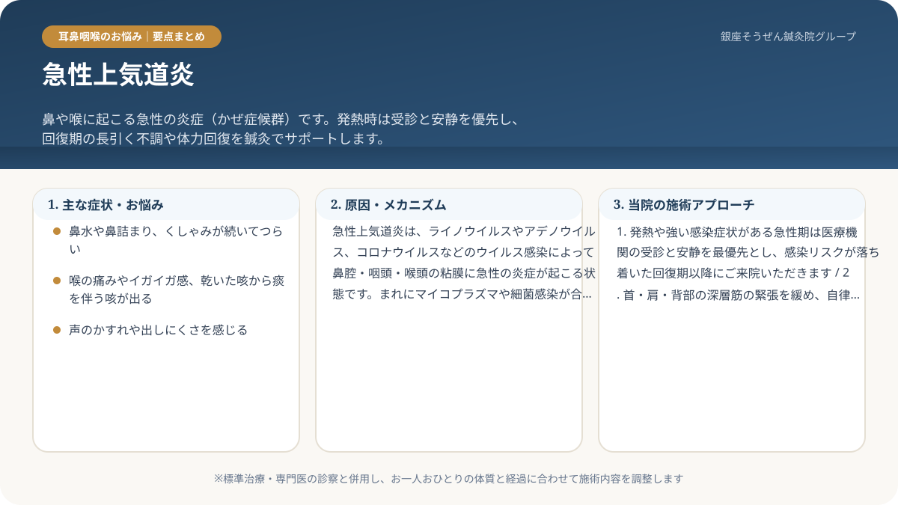
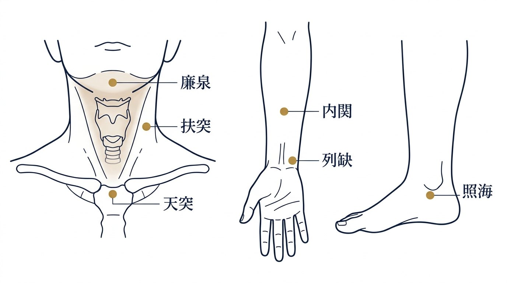

急性上気道炎の鍼灸
鼻や喉に起こる急性の炎症（かぜ症候群）です。発熱時は受診と安静を優先し、回復期の長引く不調や体力回復を鍼灸でサポートします。
まず知っておきたい要点と改善の流れ

急性上気道炎は、ライノウイルスやアデノウイルス、コロナウイルスなどのウイルス感染によって鼻腔・咽頭・喉頭の粘膜に急性の炎症が起こる状態です。まれにマイコプラズマや細菌感染が合併し、黄色や緑色の痰、副鼻腔の痛みを伴うこともあります。通常は十分な休養と水分補給、症状に応じた薬物療法で自然回復しますが、疲労や自律神経の乱れが重なると回復が遅れやすくなります。
このようなお悩みはありませんか？
- ✓鼻水や鼻詰まり、くしゃみが続いてつらい
- ✓喉の痛みやイガイガ感、乾いた咳から痰を伴う咳が出る
- ✓声のかすれや出しにくさを感じる
- ✓風邪の後に倦怠感や頭重感がなかなか抜けない
当院の施術アプローチ・改善の流れ
なぜ鍼灸で改善へ向かうのか？（作用機序の図解）
急性上気道炎に対する鍼灸は、耳周囲・頸部の微小循環改善と聴覚・粘膜調整機序を通じて、お体本来の回復力を引き出します。

翳風・風池・合谷など、耳鼻咽喉領域の神経・血管と連動する経穴へ繊細にアプローチします。
首・顎まわりの深層筋緊張を緩め、内耳や粘膜周囲の滞った血流とリンパ循環を促します。
ストレスや睡眠不足で高ぶった交感神経を鎮め、音への過敏反応や粘膜の過剰反応を和らげます。
標準治療を妨げない設計で、生活支障度（THI等）の軽減と再発しにくい体調づくりを支えます。
院長YouTube解説・関連動画
急性上気道炎の原因のほとんどはウイルス
急性上気道炎の原因のほとんどはウイルスです。原因となるウイルスは非常にいろいろあります。
マイコプラズマやクラミジア、細菌の一部が原因となって急性上気道炎を発症することもあります。
ウイルスなどの原因となるものが鼻や口から体の中に入り込むことで咽頭から肺にかけて空気が通る道で感染が起きるのです。
急性上気道炎は、主にウイルス感染によって引き起こされる症状の一つであり、風邪の症状として最も一般的に見られるものです。急性上気道炎の原因となるウイルスには、ライノウイルス、アデノウイルス、インフルエンザウイルス、パラインフルエンザウイルス、コロナウイルスなどがあります。
ライノウイルスは、急性上気道炎を引き起こす主要なウイルスであり、年間を通じて流行することがあります。ライノウイルスは、感染者のくしゃみや咳の飛沫、手や物を介して人から人へと感染が広がることがあります。
アデノウイルスは、風邪の他にも、結膜炎や咽頭結膜炎を引き起こすことがあります。アデノウイルスは、感染者の咳やくしゃみの飛沫、手や物を介して広がることがあります。
インフルエンザウイルスは、急性上気道炎だけでなく、下気道も侵すことがあり、肺炎を引き起こすこともあります。インフルエンザウイルスは、主に感染者の咳やくしゃみの飛沫を介して広がります。
パラインフルエンザウイルスは、急性上気道炎の他にも、気管支炎や肺炎を引き起こすことがあります。パラインフルエンザウイルスは、感染者の咳やくしゃみの飛沫、手や物を介して広がることがあります。
コロナウイルスは、新型コロナウイルスのように、重篤な肺炎を引き起こすこともあります。コロナウイルスは、感染者の咳やくしゃみの飛沫、手や物を介して広がることがあります。
ウイルス感染の後に細菌感染が合併することもあり、その場合は症状が悪化することがあります。細菌感染が合併した場合の症状には、黄色や緑色の痰、副鼻腔感染による顔の痛みや頭痛などがあります。
急性上気道炎の主な症状は、鼻炎のような症状
急性上気道炎の主な症状は、鼻咽頭の不快感や乾燥感、くしゃみ、鼻閉、水のような鼻汁などです。
感染するウイルスによっても症状は違い、鼻炎のような症状はすぐに改善することもあれば、長い期間続くこともあります。
・鼻水・鼻詰まり
ウイルス感染による炎症で、鼻の粘膜が腫れ上がり、鼻水が増加します。鼻水は透明なものから、黄色や緑色のものに変わることがあります。また、鼻の腫れによって鼻詰まりも起こります。
・のどの痛み・咳
ウイルス感染により、のどの粘膜が炎症を起こし、痛みや咳が現れます。咳は通常、乾いた咳で始まり、次第に痰を伴う咳に変わることがあります。
ウイルス感染に反応して、体温が上昇し、発熱が現れることがあります。発熱は通常、軽度から中等度で、高熱になることは少ないです。
・声のかすれ・声が出にくい
喉頭の炎症により、声のかすれや声が出にくい症状が現れることがあります。
・頭痛・全身の倦怠感
ウイルス感染により、頭痛や全身の倦怠感が現れることがあります。
・目のかゆみ・充血
ウイルス感染が原因で、目のかゆみや充血が現れることがあります。
急性上気道炎の改善方法は、薬
急性上気道炎の改善方法は、薬です。症状に合わせて解熱鎮痛薬や含嗽薬、鎮咳薬、去痰薬、抗ヒスタミン薬などの薬を使って改善を行います。
改善を行うときは、体を温めて、十分に水分と栄養をとり、安静にすることが非常に大切です。
症状が軽い場合は、体を温めて、十分に水分と栄養をとり、安静にすることで自然と回復しますが、体温が非常に高い場合や喉の強い痛みや激しい咳がある場合、鼻水が黄色や緑色をしている場合などは病院に行くことをお勧めします。
・安静と休息
急性上気道炎の基本的な改善法として、十分な休息が重要です。ウイルス感染による急性上気道炎は自然に改善することが多いため、体力を温存し、免疫機能を高めることで早期回復を促すことができます。
(1) 鎮痛剤・解熱剤
発熱や頭痛、のどの痛みなどの症状を和らげるために、鎮痛剤や解熱剤が使用されます。アセトアミノフェンやイブプロフェンなどが代表的な薬剤です。
(2) 咳止め・去痰剤
咳や痰が出る場合には、咳止めや去痰剤が使用されます。咳止めは咳の刺激を抑える作用があり、去痰剤は痰を柔らかくし、排出を容易にする作用があります。
(3) 抗アレルギー剤
アレルギー性の鼻炎や喘息が合併する場合には、抗アレルギー剤やステロイド薬が使用されることがあります。
・適切な水分補給
ウイルス感染による発熱や咳などで水分が失われることがあります。水分補給を十分に行い、脱水を防ぐことが重要です。
・蒸気吸入
鼻詰まりや咳を和らげるために、蒸気を吸入することが効果的です。お湯を沸かしてその蒸気を吸い込むことで、鼻や喉の粘膜を湿らせ、症状を軽減させることができます。
・抗生物質の使用
細菌感染が原因である場合や細菌感染が合併している場合には、抗生物質が使用されます。ただし、ウイルス感染には抗生物質が効果を示さないため、細菌感染が明らかでない限り、抗生物質の使用は避けるべきです。
・予防接種
インフルエンザや肺炎球菌などの予防接種を受けることで、急性上気道炎のリスクを低減させることができます。特に高齢者や基礎的な病気を持つ人は予防接種を受けることが推奨されています。
抗生物質の種類としては、以下のようなものがあります。
・ペニシリン系
アモキシシリン
アモキシシリンクラブラン酸
マクロライド系
クラリスロマイシン
アジスロマイシン
エリスロマイシン
・セフェム系
セフィキシム
セフジニル
・キノロン系
レボフロキサシン
シプロフロキサシン
これらの抗生物質は、医師の判断によって選択され、処方されます。細菌感染が疑われる場合や、細菌感染が明らかな場合に抗生物質が使われますが、ウイルス感染のみの場合には抗生物質は使用されません。
熱を下げるツボ
風邪を引いた時にオススメのセルフケアを紹介します。三間というツボです。鍼灸のゴッドハンド本間先生もオススメのツボです。
熱が上がったらここにお灸をすることで熱がすぐ下がります。効果は人によりますが試す価値はあるツボです。
風邪薬いらず！7つの天然素材で作る風邪回復ドリンク
風邪を引くのは体がウイルスに入ったからではなく、体の免疫バリアが弱ったときに普段なら防げるはずのウイルスの侵入を許してしまうことです。風邪の8割以上はライノウイルスやコロナウイルスなどのウイルス感染です。
ウイルスは鼻やのどの粘膜に普段から当たり前のように存在していますが、普段は免疫がうまく働いていて侵入をブロックしています。風邪を引くということは免疫が落ちたサインなのです。
免疫低下の原因は睡眠不足、ストレス、体温低下、栄養不足、自律神経の乱れなどです。そのような状態が重なると免疫細胞の働きが鈍くなり、目や鼻の粘膜という最前線の防御壁が破られてしまいます。
風邪薬はウイルスを殺す薬ではありません。多くの市販薬は熱や咳や鼻水などの症状を抑える薬で、実際にウイルスと戦っているのは免疫です。ウイルスを叩くのではなく免疫力を立て直すことが重要なのです。
成分は、ニンニク、しょうが、マヌカハニー、セージ、ビタミンC、クルクミン、無脂肪牛乳です。この成分によって風邪の原因と戦うための意味のあるドリンクになるのです。
・ニンニク
ニンニクは免疫を叩き起こす天然の抗生物質です。ニンニクを刻む時に生成されるアリシンは最近やウイルスを抑えてくれる作用があるため、ウイルスの細胞膜を壊して増殖を止める天然の抗菌兵器です。
さらにアリシンにはマクロファージやナチュラルキラー細胞と言った免疫細胞を活性化してウイルスを素早く排除する力を高めてくれる作用があります。ある研究ではニンニクを摂取していた人は風邪を引く人の数が少なく回復も早いという研究結果が出ています。
ポイントは、アリシンは熱に弱いため刻んでから十分置いたりお湯は50〜60度にすることです。
・セージ
セージは喉の痛みと戦う天然のハーブです。ロスマリンサンという抗菌抗炎物質が多量に含まれています。喉の痛みや扁桃腺に昔から使われているハーブで、臨床研究でもセージから抽出された液が医薬品と同様の鎮静鎮静効果を示したという結果が出ています。そのため、喉の粘膜を殺菌しながら炎症を抑え声の掠れや痛みを和らげてくれるのです。
・しょうが
しょうがの辛味のシンゲロールや生姜オールは炎症を起こすサイトカインを抑える作用があります。風邪で起こる喉の炎症、発熱や関節痛などはサイトカインが原因のためその根本の働きかけてくれる成分なのです。しょうがは温度を上げることで免疫細胞の活動を助け体が回復方向へスイッチを入れてくれるため、寒い時期はたくさんとってほしいです。
・マヌカハニー
マヌカハニーは喉のバリアを再生する天然の抗菌膜で、風邪対策の影の主役とも言われている食材です。普通のハチミツと違ってマヌカハニーはメチルグリオリキサールという強力な抗菌成分が含まれています。メチルグリオ力サールは喉の表面に薄い抗菌膜を作って最近やウイルスの増殖を防いでくれます。
またとろみのある蜂蜜は喉の粘膜を保湿保護してくれるため痛みを和らげる天然の潤滑コーティングもなります。さらにマヌカハニーの効果は市販の咳止め薬よりも有効だというデータもあります。注意点は、1歳未満の乳児にはボツリヌス症の恐れがあるため与えはいけないということです。
・ビタミンC
ビタミンCはレモンやオレンジに含まれ白血球の数や働きを高めてくれるため、ウイルスを攻撃する力を底上げしてくれます。さらに炎症による酸化ダメージを防いで回復を助けてくれます。ビタミンCは熱に弱いという特徴もあるためドリンクを作る際は40度以下になってから入れましょう。
・クルクミンと無脂肪牛乳
クルクミンはウコンの主成分で、炎症の根本に関わるNFカッパーβカエルを抑える強力な抗炎物質です。医薬品に近い作用機序がありさまざまな研究対象になっています。脂溶性のため牛乳と一緒に摂ることで吸収率が上がります。
さらに黒胡椒に含まれるピペリンとくっつくことで吸収率は20倍になります。牛乳とウコンと黒胡椒を混ぜるゴールデンミルクと言われている商品もあります。
食材は使っていますが、サプリメントと併用して摂取しています。ゼロから作るのもいいですがめんどくさがりな場合や物自体が用意できない場合はサプリメントと併用しても良いでしょう。
①無脂肪牛乳を入れます。量は飲める分だけにしましょう。
②ニンニクを入れます。チューブだと口当たりがあまり良くないためパウダーを入れましょう。３振りくらい入れます。
③ジンジャーパウダーを５振り入れます。
④セージのパウダーを入れます。
⑤マヌカハニーを入れます。量は自分の飲める分だけで良いです。甘いのが好きな場合は多めに入れても良いです。マヌカハニーを入れすぎるとそこに溜まってしまうためよく混ぜることが大事です。
⑥黒胡椒を振る。
⑦完成した風邪回復ドリンクでクルクミンとビタミンCのサプリメントを飲む。
クルクミンに関しては多くの研究論文があり、体の炎症を落ち着かせてくれるというデータがたくさんあったため京都大学がベンチャー企業とクルクミンを豊富に含むクルクルージュを開発しました。これはクルクミンの吸収率を上げてくれるため、このサプリを飲んでいます。
風邪回復ドリンクでこの2つのサプリを飲む風邪対策をして、3〜4年風邪を引いていません。自律神経回復ドリンクとともにぜひ取り入れてみてほしいと思います。風邪はウイルスが強いからかかるわけではありません。免疫力が下がった時にかかる体のサインだからこそ抗菌、抗炎、免疫強化の三方向から直る力を引き出すことが大事です。薬ではウイルスは防げませんが、免疫で倒すことはできるのです。
後鼻漏・慢性上咽頭炎・のどの違和感のツボ図解
実際の施術ではお一人おひとりの体質・症状に合わせて選穴しますが、後鼻漏・慢性上咽頭炎・咽喉頭異常感症（梅核気）・発声障害ケアの臨床でよく用いられる代表的なツボの目安です。

📌 代表的なツボの詳細一覧表を開く（6穴） ▼
| ツボ名 | 位置の目安 | 主な狙い | セルフケアの注意点 |
|---|---|---|---|
| 廉泉（れんせん） | あごの下、のど仏の上のくぼみ | 咽頭周囲の緊張緩和・飲み込みやすさサポート | のどを強く圧迫せず軽く触れる程度にします。 |
| 扶突（ふとつ） | のど仏の高さで首の横（胸鎖乳突筋付近） | 首前面の筋緊張緩和・上咽頭周囲の循環改善 | 頸動脈の近くのため自己流の強押しは避けます。 |
| 天突（てんとつ） | 左右の鎖骨の真ん中のくぼみ | のどの詰まり感（梅核気）・咳込みの鎮静 | 気管に向かって押さず、鎖骨の裏へ斜め下に軽く触れます。 |
| 内関（ないかん） | 手首の横ジワから指3本分肘寄りの中央 | ストレス性ののどのつかえ感・逆流に伴う不快感緩和 | 自律神経の過緊張を鎮める安全な遠隔穴です。 |
| 列缺（れっけつ） | 手首の親指側、シワから指2本分肘寄り | 咽頭・気道の炎症バランスと粘膜ケア | 照海と組み合わせるとのどの乾燥感に相性が良好です。 |
| 照海（しょうかい） | 内くるぶしの真下の小さなくぼみ | のどの乾燥・イガイガ感・夜間咳の遠隔調整穴 | 足首を温めながら優しく押します。 |
国際査読論文の科学的エビデンス
国際的な医学データベース（PubMed・Cochrane等）で報告されている後鼻漏・慢性上咽頭炎・咽喉頭異常感症（梅核気）・発声障害ケア領域の代表的な査読済み鍼灸研究をまとめています（標準治療との併用や研究上の限界を含めて正確に掲載）。
📚 査読論文データ・PubMed出典リンクを開く（4件） ▼
| 年・研究デザイン | 対象・規模 | 主な結果 | 限界・出典 |
|---|---|---|---|
| 2013年 大規模多施設RCT | 季節性アレルギー性鼻炎 422名（ドイツ） | 7〜8週のRQLQ QOLがシャム比0.5点・薬単独比0.7点改善（P<0.001）、頓用薬使用も有意減少（P<0.001）。 | 1年目16週では群間差消失、臨床的意義は慎重評価。 Ann Intern Med (PMID: 23420231) |
| 2021年 メタ解析 | 耳鳴り 8 RCTs（n=504） | 生活支障度THI（MD -10.11, p<0.001）・TSI（MD -8.36, p<0.001）が有意改善。VASは有意差なし（p=0.06）。 | 組入れRCTの質・サンプル規模に限界あり。 Acupunct Med (PMID: 32772848) |
| 2026年 ネットワークメタ解析 | 突発性難聴 36研究（n=3,360・標準治療併用） | ステロイド等の標準治療への鍼灸併用で総有効率RR 1.19（p<0.0001）、3週間コースが推奨。 | エビデンス確実性は低く標準治療（早期ステロイド）併用が前提。 Complement Ther Med (PMID: 42918509) |
| 2023年 メタ解析 | 成人顎関節症 22 RCTs統合（n=471） | 標準治療併用で有効率RR 1.36・疼痛VAS MD -1.23と有意改善。 | GRADE確実性は低〜非常に低、さらなる高品質RCTが必要。 Medicine (PMID: 37746950) |
参考文献・出典
- 2013年 大規模多施設RCT（季節性アレルギー性鼻炎 422名（ドイツ））— Ann Intern Med (PMID: 23420231)
- 2021年 メタ解析（耳鳴り 8 RCTs（n=504））— Acupunct Med (PMID: 32772848)
- 2026年 ネットワークメタ解析（突発性難聴 36研究（n=3,360・標準治療併用））— Complement Ther Med (PMID: 42918509)
- 2023年 メタ解析（成人顎関節症 22 RCTs統合（n=471））— Medicine (PMID: 37746950)
よくある質問（FAQ）
Q. 熱や強い咳がある状態でも施術を受けられますか？▼
Q. 風邪の後に喉の違和感やだるさだけが残っていますが対応できますか？▼
あわせて読まれる関連疾患（耳鼻咽喉のお悩み）
ある日突然片耳などが聞こえにくくなる感音難聴です。発症早期の耳鼻科ステロイド治療を最優先に、早期併用や回復期の耳鳴り・めまいをケアします。
実際には音がないのに耳の中で雑音が聞こえる状態です。耳の血流や自律神経・脳の過敏さを整えるケアで軽減を目指します。
咽頭や喉頭の粘膜に炎症が起き、喉の痛みや咳、声がれを生じる病気です。重症化の兆候に注意しつつ回復と予防を支えます。
声帯や声門周辺に袋状の嚢胞ができる喉頭嚢胞に対し、気道評価と専門医診療を最優先に安定期の咳・呼吸器ケアを支援します。
ウイルス感染や酷使で声帯が腫れて声枯れを起こす声帯炎に対し、専門医治療と安静を基本に回復を助ける鍼灸を行います。
喉の口蓋扁桃に細菌やウイルスが感染して腫れや高熱が出る病気です。急性感染期は医療機関受診が最優先（鍼灸禁忌）で、回復期・再発予防を支えます。
CLINICAL RECOVERY CASES
✨ 実際の臨床改善事例・回復経過を見る
銀座本院をはじめ各院での実際の改善事例を症状別に絞り込んでご確認いただけます。
おひとりで悩まず、まずはご相談ください
銀座本院・川口・大宮・横浜・博多・田無の各院でご予約を承っております。